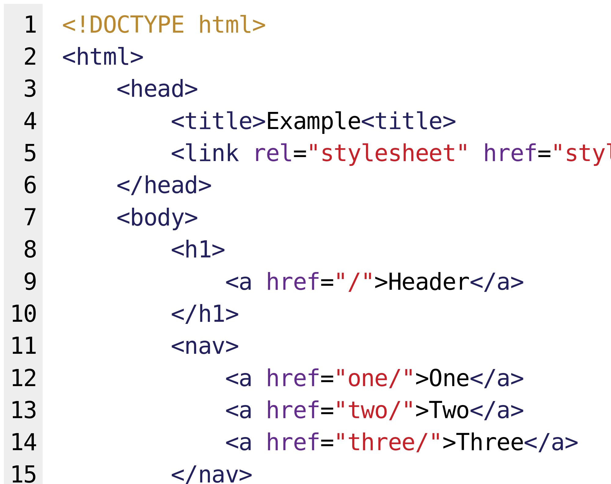

I have begun learning HTML and CSS in order to make my portfolio and apply what we are learning about foreign language acquisition to learning a programming language. I am also currently a teaching assistant for a high school HTML class, so I will need to learn the language in order to assist students. The basic structure of the language was easy to pick up on, but the more advanced structures related to styling are more difficult. I hope to be proficient in the language by the end of the semester.
I thought the language acquisition in children learning their native language was interesting, as I have a three month old nephew and have gotten to view firsthand his language development since he was born. He recently started smiling and laughing, and "talks" back to us when we talk to him. It is interesting to see him go through each stage, from crying to cooing and now some babbling. I did not realize there was process to this development and I am excited to see him develop his language skills even further!
I was surprised to learn there are world-wide readiness standards for languages, as I thought standards for language learning were determined locally by schools. The issue of providing national standards for learning beyond standardized tests is an issue in the US education system, and I am impressed that the world readiness standard for learning languages provides a guide/standard for language teachers and students.
I think the lexical syllabus approach is useful because it provides students with vocabulary that they know will be useful when using the language. It provides authentic materials to give students a sense of what words are commonly used in the target language, giving them an idea of what they should know to be profecient in the language.